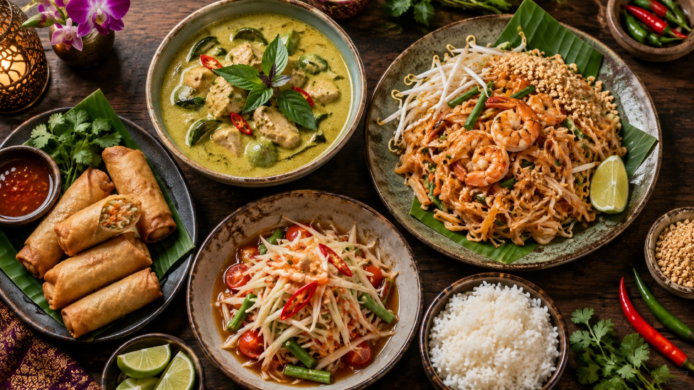

Family-owned since 2006 · Escondido
Coconut curries, wok-fried noodles, papaya salad three ways and a plate-lunch special every day from 11 to 3, with spice levels from 1 to 10. Dine in, take out, or order online for pickup.
Phad Thai, Spicy Drunken Noodles, See-Yew and Grapow Fried Rice, cooked to order in an open kitchen you can hear sizzling from the dining room.
Green, yellow, Panang and Massaman curries, plus Tom Yum and Tom Kah soups by the bowl or the pot for the table.
Every dish is made with your spice level in mind, from mild to Thai hot, and gluten-friendly items are marked on the menu.
About us
Panya Thai Kitchen has been a family-owned restaurant on West Valley Parkway since 2006, just off I-15 with a free parking lot out front.
The kitchen is open to the dining room, so you can hear the wok going and smell the garlic and basil while you wait. Dishes come out fast, and every one of them is made to your spice level, from 1 to 10.
Come in for the daily lunch special, bring the family for dinner, sit outside when the weather is nice, or order online and pick it up on the way home.
Lunch specials
Lunch specials are served plate-lunch style: your main dish with soup, salad, fried spring rolls, fried wontons and steamed rice (noodle and fried-rice dishes come on their own). Pick a dish, pick a protein, pick your heat.
Reviews
“This is my favorite Thai restaurant in Escondido… All the staff are super friendly and attentive. As a student, I love taking advantage of the lunch specials from 11am-3pm.”
“Honestly, I haven't found a place that aces the Pad Thai like they do. The noodles are immaculately flavorful and the sides are super filling.”
“A lovely family owned Thai restaurant, that feels warm and welcoming inside… Service was outstanding and helpful and our food came out very fast.”
“I've been coming here for many years and the Thai dishes are always cooked fast and delicious each time… The kitchen is open and we can hear the dishes sizzling and smell the food cooking.”
“Panya Thai always has great Thai food! My favorite is cashew nut with tofu. No matter what I order, yum.”
“My husband and I have been going to this restaurant for lunch for several years. They have a good selection of lunch specials… The dishes were delicious and came fast. Our server was attentive.”
Hours & location
| Monday | 11:00 am – 9:00 pm |
|---|---|
| Tuesday | 11:00 am – 9:00 pm |
| Wednesday | 11:00 am – 9:00 pm |
| Thursday | 11:00 am – 9:00 pm |
| Friday | 11:00 am – 9:00 pm |
| Saturday | 11:00 am – 9:00 pm |
| Sunday | 11:00 am – 9:00 pm |
Lunch specials daily 11 am – 3 pm. Reservations by phone. Free parking lot, outdoor seating, wheelchair accessible.
Panya Thai Kitchen
1101 W Valley Pkwy, Escondido, CA 92025